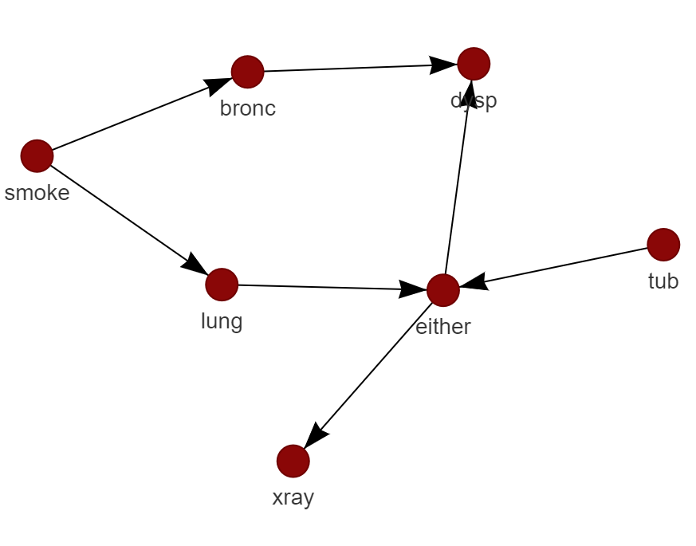
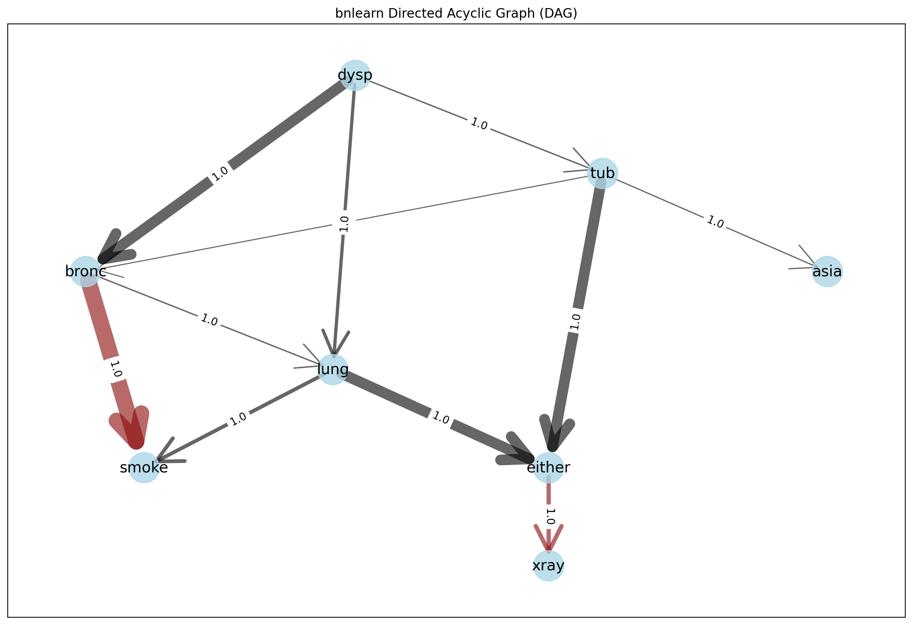

Interactive plot
bnlearn contains interactive and static plotting functionalities with bnlearn.bnlearn.plot() for which many network and figure properties can be adjusted, such as node colors and sizes.
To make interactive plots, it simply needs to set the interactive=True parameter in bnlearn.bnlearn.plot().
The interactive plots are created using the D3Blocks library for which various input parameters can be specified. The static plots are created using matplotlib and networkx.
Lets make some interactive and static examples.
Interactive plot examples
# Install the d3blocks library first if you want interactive plots
pip install d3blocks
# Example of interactive plotting
import bnlearn as bn
# Load example dataset
df = bn.import_example(data='asia')
# Structure learning
model = bn.structure_learning.fit(df)
# Make interactive plot with default settings
bn.plot(model, interactive=True)
# Add more parameters for the interactive plot
bn.plot(model, interactive=True, params_interactive = {'height':'800px', 'width':'70%', 'layout':None, 'bgcolor':'#0f0f0f0f'})
Create interactive plots with a specific node-color and node-sizes across the entire network.
Note that all the results below can be interactive as the graph above. But for demonstration purposes I created a screenshot.
# Set the node color
bn.plot(model, interactive=True, node_color='#8A0707')
# Set the node color and node size
bn.plot(model, interactive=True, node_color='#8A0707', node_size=25)
 |
|

Create interactive plots with user-defined node-colors and node-sizes.
# First retrieve node properties
node_properties = bn.get_node_properties(model)
# Make some changes
node_properties['xray']['node_color']='#8A0707'
node_properties['xray']['node_size']=50
node_properties['smoke']['node_color']='#000000'
node_properties['smoke']['node_size']=35
# Make plot with the specified node properties
bn.plot(model, node_properties=node_properties, interactive=True)
|

The ``params_interactive`` parameter allows you to adjust more figure properties.
bn.plot(model, interactive=True, params_interactive = {'height':'800px', 'width':'70%', 'layout':None, 'bgcolor':'#0f0f0f0f'})
Static plot
To create static plots simply set the interactive=False in all the above examples. The only difference is in params_static for which the dict contains more variables that adjust the figure properties.
# Add parameters for the static plot
bn.plot(model, interactive=False, params_static = {'width':15, 'height':8, 'font_size':14, 'font_family':'times new roman', 'alpha':0.8, 'node_shape':'o', 'facecolor':'white', 'font_color':'#000000'})
Comparison of two networks
In come cases you may derive two networks where you need to know the differences. In the following example I will learn a network using structure learning and compare it to the ground truth.
# Load asia DAG
model = bn.import_DAG('asia')
# plot ground truth
G = bn.plot(model)
# Sampling
df = bn.sampling(model, n=10000)
# Structure learning of sampled dataset
model_sl = bn.structure_learning.fit(df, methodtype='hc', scoretype='bic')
# Compute edge strength with the chi_square test statistic
model_sl = bn.independence_test(model_sl, df, test='chi_square', prune=True)
# Plot based on structure learning of sampled data
bn.plot(model_sl, pos=G['pos'])
# Compare networks and make plot
bn.compare_networks(model, model_sl, pos=G['pos'])
|
|


|
|


Node properties
Edge properties can easily be changed using the bnlearn.bnlearn.get_node_properties() function.
Note that these functionalities can be combined with the edge properties.
import bnlearn as bn
# Load asia DAG
df = bn.import_example(data='asia')
# Structure learning of sampled dataset
model = bn.structure_learning.fit(df)
# plot static
G = bn.plot(model)
# Set node properties
node_properties = bn.get_node_properties(model)
# Make some changes
node_properties['xray']['node_color']='#8A0707'
node_properties['xray']['node_size']=2000
node_properties['smoke']['node_color']='#000000'
node_properties['smoke']['node_size']=2000
# Make plot with the specified node properties
bn.plot(model, node_properties=node_properties, interactive=False)
|

Edge properties
Edge properties can easily be changed using the bnlearn.bnlearn.get_edge_properties() function.
Note that these functionalities can be combined with the node properties.
import bnlearn as bn
# Load asia DAG
df = bn.import_example(data='asia')
# Structure learning of sampled dataset
model = bn.structure_learning.fit(df)
# Test for significance
model = bn.independence_test(model, df)
# plot static
G = bn.plot(model)
# Set some edge properties
# Because the independence_test is used, the -log10(pvalues) from model['independence_test']['p_value'] are scaled between minscale=1 and maxscale=10
edge_properties = bn.get_edge_properties(model)
# Make some changes
edge_properties['either', 'xray']['color']='#8A0707'
edge_properties['either', 'xray']['weight']=4
edge_properties['bronc', 'smoke']['weight']=15
edge_properties['bronc', 'smoke']['color']='#8A0707'
# Plot
params_static={'edge_alpha':0.6, 'arrowstyle':'->', 'arrowsize':60}
bn.plot(model, interactive=False, edge_properties=edge_properties, params_static=params_static)
 |